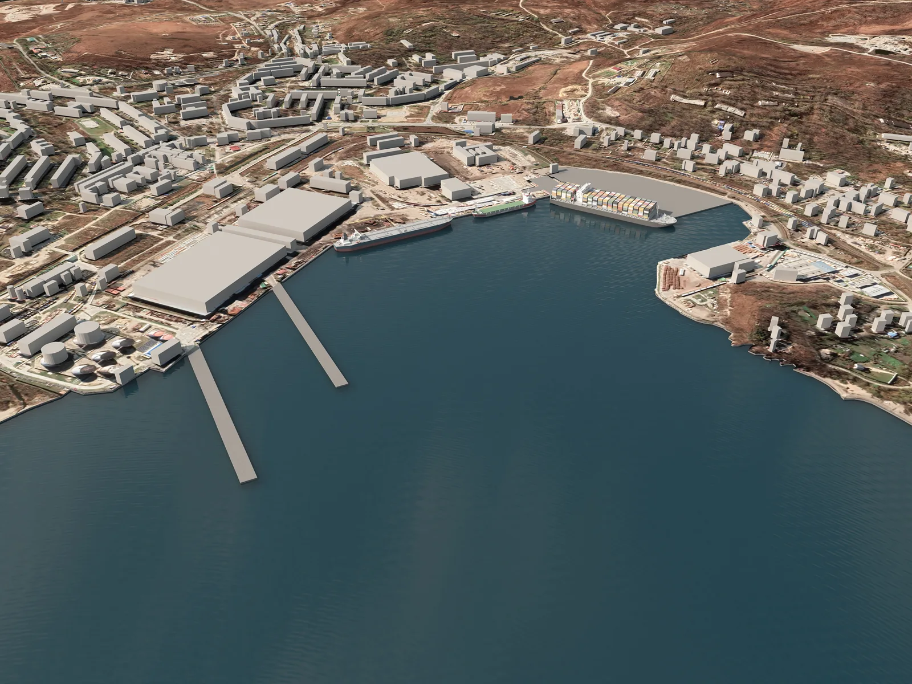
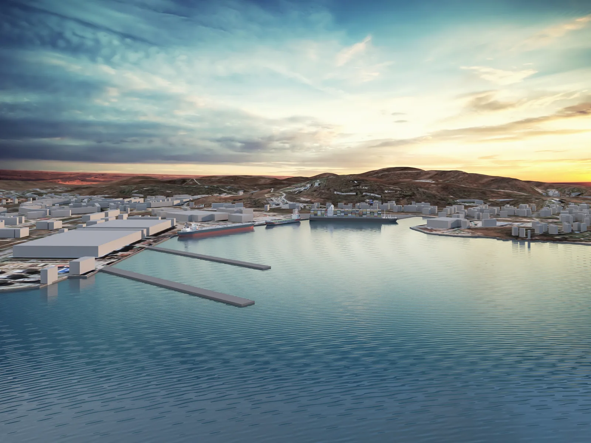
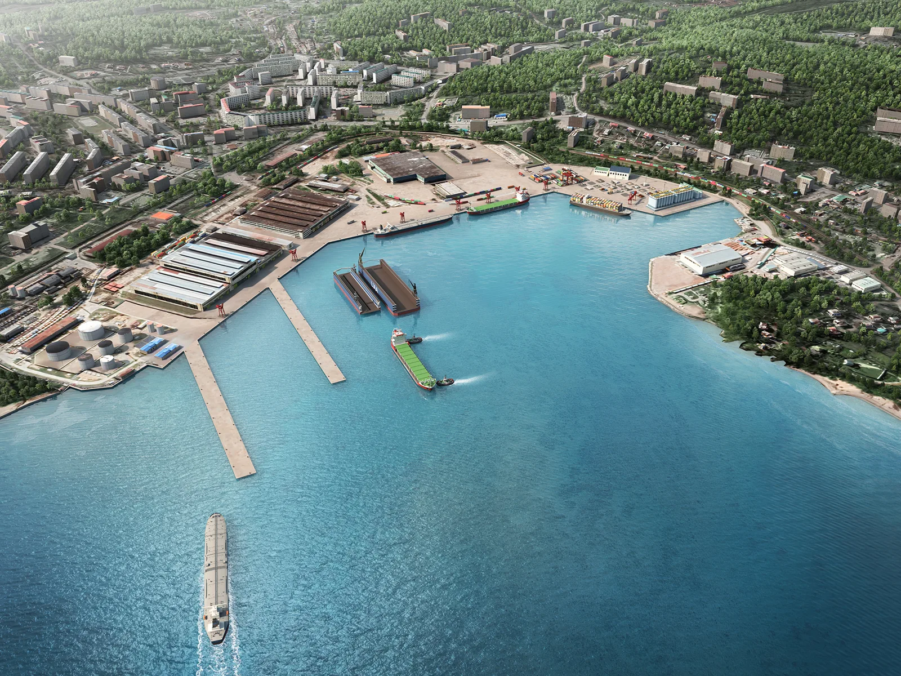

메이크 그룹은 해외 항만 개발 분야에서 혁신적인 조감도 제작 서비스를 제공하는 선두 기업입니다.
우리는 섬세한 디자인과 최신 기술을 활용하여 해외 항만 개발 프로젝트를 현실화하는데 주력하고 있습니다. 이 글에서는 메이크 그룹의 해외 항만 개발 조감도 제작 과정에 대해 소개하도록 하겠습니다.
실제 설계 자료는 업체에서 제공해 주셨으나 업체 사내 보안과 관련하여 업로드 하지 못하는 점은 양해 부탁드립니다.

1. 요구 사항 분석:
첫 번째로, 우리는 고객과의 상담을 통해 해외 항만 개발 프로젝트의 요구 사항을 분석합니다. 고객의 비전과 목표, 항만의 크기와 용도, 환경적인 제약 사항 등을 파악하여 프로젝트의 범위와 목표를 명확히 설정합니다. 이를 통해 조감도 제작 작업의 방향성을 결정하고 고객의 요구를 충족시킬 수 있는 최적의 솔루션을 제시합니다.
2. 디자인 개발:
다음으로, 우리 팀은 해외 항만의 개념적인 디자인을 개발합니다. 이 단계에서는 고객의 요구 사항과 항만의 특성을 고려하여 섬세한 디자인 작업을 진행합니다. 2D 및 3D 시각화 도구를 사용하여 항만의 레이아웃, 건축물의 배치, 도로 및 인프라 구성 등을 시각적으로 표현합니다. 디자인 개발은 고객과의 긴밀한 협업을 통해 최적의 디자인을 도출해내는 과정입니다.
제작과정이미지


해상도는 A0사이즈로 출력할 수 있는 크기로 제작되었습니다.
3. 기술 적용:
우리는 최신 기술과 소프트웨어를 적극적으로 활용하여 조감도 제작 작업을 수행합니다. 3D 모델링 및 시뮬레이션 도구를 사용하여 항만의 세부 요소와 시스템을 표현하고, 현실적인 시각화 효과를 제공합니다. 또한, GIS(Geographic Information System) 기술을 활용하여 지리적 정보와 데이터를 효율적으로 관리하고, 항만 개발 프로세스를 최적화합니다.
4. 시뮬레이션 및 시각화:
해외 항만 개발 조감도 제작에서는 시뮬레이션과 시각화가 매우 중요한 역할을 합니다. 우리는 다양한 요소들을 시뮬레이션하여 항만의 작동 원리와 효율성을 확인하고, 이를 시각화하여 고객에게 명확하게 전달합니다. 시각화는 정확한 비주얼 효과와 인터랙티브한 기능을 포함하여 항만 개발의 특징과 장점을 강조하는 데에 활용됩니다.
결과물

5. 최종 제작 및 검토:
조감도 제작 작업이 완료되면 고객과의 최종 검토 단계에 들어갑니다. 완성된 조감도는 고객의 요구 사항과 기대에 부합하는지 검증하고, 필요한 수정이나 보완 작업을 진행합니다. 우리는 고객의 만족도를 최우선으로 생각하며, 최종 제작물의 품질과 완성도를 높이기 위해 노력합니다.
메이크 그룹은 해외 항만 개발 분야에서 혁신과 전문성을 바탕으로 최상의 조감도 제작 서비스를 제공합니다. 우리는 고객의 비전을 현실로 만들기 위해 섬세한 디자인과 최신 기술을 결합하며, 항만 개발 프로젝트의 성공을 위해 항상 최선을 다합니다. 함께 메이크 그룹과 일하면 현실적이고 매력적인 해외 항만 조감도를 만들어낼 수 있습니다.